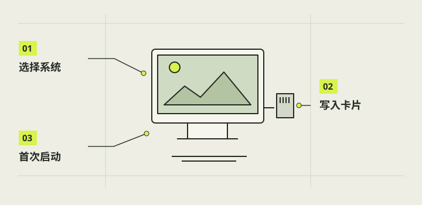

写入系统与首次启动
本章把“系统卡”和“第一次开机”分清：系统写入存储卡，树莓派主控读取它启动。这里面向准备新卡的读者；已经装好并保存照片的相机应保留现有卡，不把重写系统当作排障捷径。完成后只确认基础系统可进入，不宣布相机应用或全部硬件已经通过。

本章完成目标
- 说明系统卡、主控与屏幕的分工
- 新卡完成写入并进入系统界面
- 记录显示和相机识别状态
开始前准备好
- 完成第05章基础连接与供电检查
- 准备可清空的专用存储卡与电脑读卡器；现有照片卡先备份并保留
- 明确主板型号、图形桌面需求和匹配电源
- 系统镜像
- 包含操作系统文件的发行包，由写卡工具写入存储介质。
- 启动介质
- 树莓派上电后读取系统的卡或其他受支持设备。
- 首次启动
- 新系统第一次加载并完成初始设置的过程。
确认目标卡与系统
看清读卡器里是哪张卡，核对容量与标签；写入会覆盖目标卡内容，不能误选现用照片卡。到树莓派官网取得 Imager，在其中选实际主板和适用系统。若后续要运行触屏图形应用，应选含桌面的适配镜像；其他镜像即使能开机，也不代表能运行本项目。
注意 / 未确认卡身份时不要启动写入。
写入并核验系统卡
在 Imager 中按需设置用户名、地区、无线网络和远程访问，先检查摘要再写入。等待工具完成写入与验证提示，按系统要求安全弹出。用户名和密码自行设置并私下保存；不要把历史设备配置或公开示例值直接照搬。若验证失败，先记录报错并检查卡与读卡器。
注意 / 写入会清空被选中的卡；不要用已有照片卡练习。
断电装好基础部件
断开树莓派全部供电后插入系统卡，复核屏幕、摄像头排线和基础供电符合第05章核定的硬件说明。第10章才讨论的按钮、拨杆和自制供电控制线路，不是首次启动的通用前提。给连接状态留一张照片，方便无画面时回查。同时确认卡已插到位。
注意 / 接口和排线方向依型号而异，调整前必须断电。
观察第一次开机
接通匹配电源，观察指示灯、屏幕是否点亮以及系统是否进入桌面或初始设置。完成语言、时区和网络等界面要求的设置，再记录显示方向和可操作区域。开机需要时间；若停在黑屏或引导画面，先写下现象，不要强制反复拔电或马上重写卡。
分开核对系统与相机
先查看系统版本和架构，再在已装官方相机工具的系统里列出摄像头；若工具不存在，记录“未安装”并按该镜像官方说明处理。设备被列出只证明识别，不等于已经拍照。新镜像的软件包、显示驱动与桌面环境可能不同，自制相机应用的适配留到第09章。
cat /etc/os-release
rpicam-hello --list-cameras注意 / 相机命令只适用于已装相应工具的系统。
完成后，逐项打勾。
勾选帮助你记录进度，不代表项目替你完成了实机验收。
遇到问题，从这里排查。
写卡后没有系统画面
断电后回查供电、卡和显示连接，再核对镜像是否支持主板；保留指示灯现象。
系统有桌面但没有相机界面
系统启动与应用启动是两环；按第09章核对应用版本和安装条件。
本项目的实际进展
- 现有实机曾是 Pi 3B+、Debian 13.7 trixie arm64 和 Wayland 桌面；这是当时设备证据，不是给新读者指定的唯一镜像。
- 2026-10-29 00:33 的 1.0 安装因目录权限失败并回退；00:50:57 修复后的实机报告显示 boot 与 session 启用成功、状态 staged，仍缺再次开机的显示观察。
资料与核对依据
- C 最新交接 · camera-project/C-软件/handoff.md
- 实机修复安装总结 · camera-project/C-软件/qa/newcam-1.0/device-reports/20261029-005057-v1-repair-install-summary-c43f833093b74b8883b4a79df80f5062.json
- 树莓派官方入门与 Imager ↗
- 树莓派官方相机软件 ↗
资料核对日期：2026-10-30。不同硬件、系统版本和材料需要重新验证。